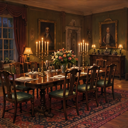

Pass & play
Share one screen with private handoffs between detectives.
Start pass & play →An estate mystery for 3–6 detectives
Twenty-one cards. One sealed solution. Everyone at the table knows something you don’t.
Choose your table
Share one screen with private handoffs between detectives.
Start pass & play →Run the board and issue compact five-letter hand codes.
Host a game →Enter your private hand code to view cards and keep notes.
Join as a player →The evidence
